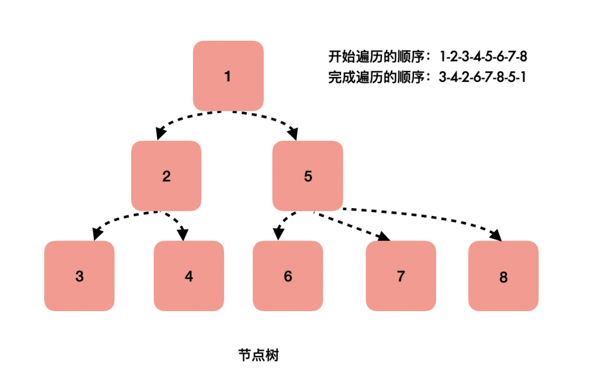
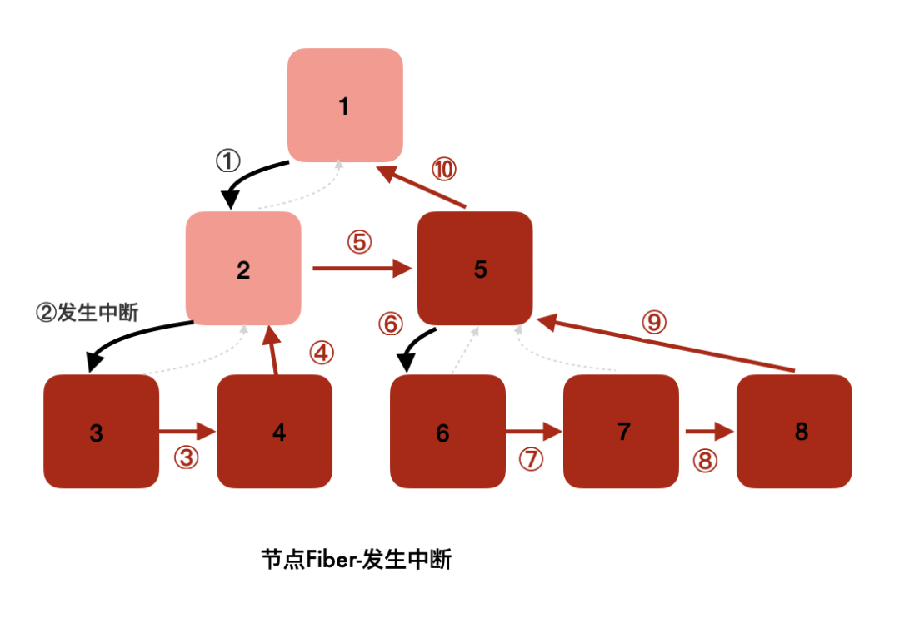

React 基础知识
1. 对 React 的理解、特性
React 是靠数据驱动视图改变的一种框架，它的核心驱动方法就是用其提供的 setState 方法设置 state 中的数据从而驱动存放在内存中的虚拟 DOM 树的更新
更新方法就是通过 React 的 Diff 算法比较旧[虚拟 DOM](https://so.csdn.net/so/search?q=虚拟 DOM&spm=1001.2101.3001.7020) 树和新虚拟 DOM 树之间的 Change ，然后批处理这些改变。
遵循组件设计模式、声明式编程范式和函数式编程概念，以使前端应用程序更高效
使用虚拟 DOM 来有效地操作 DOM，遵循从高阶组件到低阶组件的单向数据流
- 声明式编程：React采用声明式编程范式，允许开发者描述UI应该呈现的状态，而非具体的操作步骤。这种抽象简化了开发过程，并且有利于React在内部执行高效的DOM更新。
- 虚拟DOM：React引入了虚拟DOM的概念，即在内存中维护一个与实际DOM相对应的数据结构。每当组件的状态变化时，React首先更新虚拟DOM，然后通过高效的Diff算法找出最小化的DOM更新操作，再将这些变化反映到实际DOM上，从而极大提升了渲染性能。
- 组件化：React强调组件化开发，鼓励将UI拆分成可复用的独立单元。组件具有明确的输入（Props）和内部状态（State），使得代码易于组织和测试。
- 单向数据流与可预测性：React推崇单向数据流的设计理念，数据从父组件流向子组件，通过props传递，而子组件通过回调函数通知父组件状态变化，这种设计有助于理解和调试应用状态。
- 函数组件与Hooks：随着React 16.8版本引入的Hooks，函数组件获得了状态管理和生命周期功能，使得无需类就能写出完整功能的组件，进一步简化了代码结构，提高了可读性和可复用性。
- React Fiber：React 16 引入的调度算法改进，提供了更细粒度的任务划分与优先级调度，增强了应用在复杂场景下的流畅性。
- 兼容性与扩展性：React生态丰富，支持服务端渲染（SSR）、静态站点生成（SSG）、移动应用开发（React Native）等多种应用场景，具备良好的兼容性和扩展能力。
2. React 生命周期
React组件的生命周期在过去的不同版本中有所调整，以下是React类组件的经典生命周期钩子（React v16及之前版本）和现代函数组件使用的Hook形式生命周期方法的对比表：
类组件生命周期方法（经典生命周期）：
| 阶段 | 生命周期钩子 | 描述 |
|---|---|---|
| 初始化/挂载 | constructor(props) | 构造函数，在组件实例化时调用，用于设置初始状态或绑定实例方法 |
| 挂载前/实例化后 | static getDerivedStateFromProps(props, state) | （可选）在每次渲染前调用，返回新的state以响应props更改，但不推荐过度依赖此方法 |
| 挂载前 | render() | 必须定义的方法，用于返回jsx元素，React根据此方法渲染DOM |
| 挂载后 | componentDidMount() | 组件挂载到DOM后调用，常用于网络请求、订阅或手动操作DOM |
| 更新前 | shouldComponentUpdate(nextProps, nextState) | （可选）在props或state即将更改时调用，返回布尔值决定是否重新渲染 |
| 更新前 | static getSnapshotBeforeUpdate(prevProps, prevState) | 在最新的渲染被提交到DOM之前获取一些信息，返回值将在 componentDidUpdate 中作为第三个参数 |
| 更新 | render() | （同上）在props或state更改时再次调用 |
| 更新后 | componentDidUpdate(prevProps, prevState, snapshot) | 组件完成更新并重新渲染到DOM后调用 |
| 卸载前 | componentWillUnmount() | 组件从DOM移除之前调用，用于清理工作如取消定时器、解绑事件监听器等 |
函数组件生命周期钩子（使用React Hooks）：
| 阶段 | Hook 方法 | 描述 |
|---|---|---|
| 初始化/挂载 | useState() | 初始化状态并在每次渲染时返回一对值（当前状态和更新状态的函数） |
| 初始化/挂载 | useEffect(fn, deps) | 类似于 componentDidMount 和 componentDidUpdate 的合并，以及 componentWillUnmount 功能；fn 函数在组件渲染后运行，deps 是依赖数组，控制何时重新运行该效果 |
| 初始化/挂载 | useLayoutEffect(fn, deps) | 类似 useEffect，但在所有 DOM 变更之后同步调用 |
| 初始化/挂载 | useMemo(() => result, deps) | 记忆化计算结果，仅当依赖项deps改变时重新计算 |
| 初始化/挂载 | useCallback(fn, deps) | 记忆化函数引用，避免不必要的函数重创建 |
| 卸载 | useCleanup(returnFn) | 返回的函数在组件卸载时执行，用于资源清理 |
注意：useEffect、useMemo 和 useCallback 的依赖数组可以帮助确定何时重新执行钩子逻辑。
由于[React Hooks](https://so.csdn.net/so/search?q=React Hooks&spm=1001.2101.3001.7020)的引入，函数组件现在可以直接处理大部分原本需要生命周期方法才能完成的任务，使得组件更加简洁和易于维护。
旧的生命周期流程图如下：
通过两个图的对比，可以发现新版的生命周期减少了以下三种方法：
componentWillMount
componentWillReceiveProps
componentWillUpdate
其实这三个方法仍然存在，只是在前者加上了UNSAFE_前缀，如UNSAFE_componentWillMount，并不像字面意思那样表示不安全，而是表示这些生命周期的代码可能在未来的 react版本可能废除
同时也新增了两个生命周期函数：
getDerivedStateFromProps
getSnapshotBeforeUpdate
3. React 性能优化的手段
React 中进行性能优化的手段可以从多个维度进行分类，以下是一些关键类别及其对应的优化策略：
1. 组件优化
- 使用PureComponent或React.memo：对于仅根据props和state改变才重新渲染的组件，使用
React.PureComponent或者对其包装一层React.memo，它们都能通过浅比较props来避免不必要的重新渲染。 - shouldComponentUpdate/React Hooks中的useMemo/useCallback：在类组件中实现
shouldComponentUpdate生命周期方法来手动控制是否更新组件。在函数组件中，使用useMemo缓存计算结果，useCallback缓存回调函数，防止因依赖项不变而引起的无效渲染。
2. 状态管理与变更
- 减少不必要的setState调用：合并多次对同一状态的修改，例如使用
useStatehook时，可以利用函数式的setState来一次性更新多个状态值。 - 选择性地更新state：只在props或state真正发生变化时才进行更新，避免频繁或大面积的state变更引发大量子组件重新渲染。
3. Virtual DOM与Diff算法优化
- 合理构建组件层级：保持组件树扁平化，减少不必要的嵌套层次，使React的diff算法更高效。
- 利用key属性：为列表元素提供稳定的唯一key，帮助React识别并最小化DOM变动。
- 少用 dom 层级 多使用箭头标签替代
4. 事件处理优化
- 使用合成事件：React的合成事件系统可以减少全局事件监听器的数量，提高事件处理效率。
- 避免内联函数绑定：在事件处理函数中，避免每次渲染时创建新的函数引用，而是使用箭头函数或者
useCallback来缓存函数引用。
5. 懒加载与代码分割
- 动态导入：使用React.lazy和Suspense来按需加载组件，减轻初始加载负担，提高首屏加载速度。
- 使用优先级加载CSS、JavaScript和图片资源。
6. 优化渲染过程
- 使用ReactDOM.createPortal：将某些组件渲染到根DOM之外，比如渲染到document.body，可以避免不必要的re-render。
- CSS动画与交互优化：配合requestAnimationFrame等API来处理复杂的动画，减少不必要的布局重排和重绘。
7、工具辅助
- Profiler工具：利用React DevTools的Profiler面板分析组件渲染性能瓶颈。
- 性能监控与警告：设置性能指标监控点，及时发现和修复潜在性能问题。
8、前端通用优化
- 静态资源压缩与HTTP缓存：优化CSS、JavaScript文件大小，合理设置HTTP缓存策略。
- 服务端渲染(SSR)：针对SEO友好和首屏加载速度，结合Next.js等框架进行服务器端渲染。
4. React如何捕获错误
错误边界（Error Boundaries）：
- React 16及更高版本引入了错误边界这一概念，它是一种特殊的React组件，能够在其子组件树中捕获任何渲染错误或其他JavaScript错误。当错误边界内的任何子组件抛出错误时，错误边界能够捕获这个错误，记录日志，并且可以选择性地显示恢复界面，而不是让整个应用程序崩溃。
除此之外还可以通过window.onerror或unhandledrejection事件监听器在全局范围内捕获未处理的错误。
1 | window.addEventListener('error', function(event) { ... }) |
5. tsx转换成真实DOM过程
- TypeScript 编译阶段：
- .tsx 文件包含了 TypeScript 类型注解和 JSX 语法，首先通过 TypeScript 编译器（如tsc或者配合Babel的@babel/preset-typescript插件）进行编译。
- TypeScript 编译器负责检查类型注解的正确性，并且把包含类型信息的 TypeScript+JSX 代码转换为普通的 JavaScript 代码，同时保持 JSX 结构不变。
- JSX编译阶段：
- 开发者使用JSX编写React组件。
- JSX并非浏览器原生支持的语法，所以需要通过像Babel这样的编译器将其转换为标准的JavaScript代码。
- Babel将JSX转换成React.createElement(component, props, …children)的调用形式，其中component是组件名称或原生DOM元素标签名，props是组件属性对象，children是子元素数组。
- 创建虚拟DOM（VDOM）：
- React.createElement()调用会产生一个虚拟DOM节点对象，它是一个轻量级的JavaScript对象，模拟了DOM节点的结构和属性。
- 整个组件树会转换成由这些虚拟DOM节点构成的虚拟DOM树。
- 渲染虚拟DOM：
- 当调用ReactDOM.render()方法时，React接收虚拟DOM树作为参数。
- React会将这个虚拟DOM树与实际DOM进行比较（首次渲染时不存在比较，直接创建）。
- DIFF算法与更新DOM：
- 在组件状态或props更改导致重新渲染时，React会生成一个新的虚拟DOM树，并与旧的虚拟DOM树进行高效差异比较（称为Reconciliation或Diffing过程）。
- Diff算法找出最小化的DOM操作集合（增删改查节点）。
- React随后将这些操作应用到实际的DOM上，仅更新需要改变的部分，而不是完全替换整个DOM树。
- 真实DOM更新：
- 最终，React通过ReactDOM模块与浏览器底层交互，执行必要的DOM操作，将虚拟DOM树的改动反映到浏览器的真实DOM中
6. 对Fiber架构的理解
Fiber 即是React新的调度算法
在数据更新时，react生成了一棵更大的虚拟dom树，给第二步的diff带来了很大压力——我们想找到真正变化的部分，这需要花费更长的时间。js占据主线程去做比较，渲染线程便无法做其他工作，用户的交互得不到响应，所以便出现了react fiber。
React 为了解决这个问题，根据浏览器的每一帧执行的特性，构思出了 Fiber 来将一次任务拆解成单元，以划分时间片的方式，按照Fiber的自己的调度方法，根据任务单元优先级，分批处理或吊起任务，将一次更新分散在多次时间片中，另外, 在浏览器空闲的时候, 也可以继续去执行未完成的任务, 充分利用浏览器每一帧的工作特性。
一次更新任务是分时间片执行的，直至完成某次更新。
这样 React 更新任务就只能在规定时间内占用浏览器线程了, 如果说在这个时候用户有和浏览器的页面交互，浏览器也是可以及时获取到交互内容。
Fiber架构出现之前 react 存在的问题
- 主线程阻塞：在React 15及更早版本中，当组件树发生更新时，React会通过递归算法一次性完成整个组件树的渲染过程，这个过程如果涉及大量组件，会导致主线程长时间阻塞，无法处理其他的UI交互，从而造成卡顿和延迟，降低用户体验。
- 无法中断与恢复渲染：原有的渲染过程不具备中断和恢复的能力，一旦开始渲染，就必须等到整个过程结束，即使在中间有更高优先级的任务也需要等待。
- 无法实现增量渲染：以往的React无法有效区分渲染任务的重要性和紧急程度，所有更新任务都被视为同等重要的，无法做到逐步、增量地渲染UI。
- 资源优化不足：旧版React无法根据应用的具体需求动态分配资源，无法高效利用有限的CPU周期来优化渲染性能。
jsx 形成 dom 的以下几个步骤，react 在虚拟 dom 之前做了一层数据结构设计将ReactElement 转换为 fiberNode

- 写JSX来描述React组件的结构和内容。
- JSX被Babel转译成React.createElement(__jsx或__jsxs)的调用，生成ReactElement。
- 在React的协调过程中，ReactElement被转换成FiberNode。
- FiberNode是React用来进行高效渲染和更新的数据结构，它支持并发渲染和优先级调度。
- 最终，FiberNode的信息被用来更新浏览器中的真实DOM，从而呈现用户界面。
Fiber数据结构是一个链表，这样就为Fiber架构可中断渲染提供可能
1 | this.key = key;//元素的唯一标识。 |
- tag****：
- tag****用来标识Fiber节点的类型。
- 不同的tag值代表了不同类型的React元素，比如函数组件、类组件、DOM元素等。
- React会根据tag的值来决定如何处理该Fiber节点。
- key****：
- key****是一个可选的字符串，用于在兄弟元素之间建立唯一的身份。
- 当列表重新排序或元素添加/删除时，key帮助React识别哪些元素发生了变化，从而高效地更新UI。
- 在Fiber节点中，key用于在协调过程中识别节点的身份。
- child****：
- child****指向Fiber节点的第一个子节点。
- 通过child属性，React可以遍历Fiber树，执行渲染和更新操作。
- sibling****：
- sibling****指向Fiber节点的下一个兄弟节点。
- 当React遍历完一个Fiber节点的所有子节点后，它会通过sibling属性移动到下一个兄弟节点，继续遍历。
- return****：
- return****指向Fiber节点的父节点。
- 通过return属性，React可以在Fiber树中向上回溯，这对于错误处理和优先级调度等功能非常重要。
Fiber树生成
- 首先调用createRoot方法创建FiberRoot(应用根节点)、RootFiber(Fiber树的根节点)，目前对应节点上的数据都是空的，生成的数据结构如下：
1 | "tag": 1,//ConcurrentRoot |
- 调用render方法创建对应Fiber节点的信息，因为上一波生成都是空，我们需要把组件App(),dev节点都构建成Fiber node。后面你就需要知道React Fiber是如何工作的？
React Fiber工作原理详解
双缓冲技术： React Fiber使用了类似于图形渲染中的双缓冲技术。这意味着在构建新的UI树时，React会同时在内存中维护两棵树：当前屏幕上显示的树（current tree）和正在构建的树（work-in-progress tree）。只有当新的树完全构建完成后，它才会被一次性地渲染到屏幕上，从而实现更加流畅的用户体验。
任务调度： React Fiber引入了任务调度的概念，允许将渲染工作拆分成多个较小的任务单元。这些任务单元可以被中断和恢复，从而实现并发渲染。React根据任务的优先级来决定它们的执行顺序，确保高优先级的任务（如用户交互）能够优先执行。
运行方式:
- Reconciliation阶段： 当React决定要更新UI时，它会启动reconciliation（协调）过程。在这个阶段，React会比较新旧两棵树之间的差异，并为需要更新的组件生成相应的Fiber节点。这个过程是异步的，可以被中断和恢复。
- Commit阶段： 当所有的Fiber节点都被处理完毕后，React会进入commit阶段。在这个阶段，React会将之前在render阶段计算出的所有变化一次性应用到DOM上，并触发相关的生命周期方法（如useEffect，useLayoutEffect方法）。这个过程是不可中断的，因为它涉及到实际的DOM操作。
- 优先级调度： React Fiber通过优先级调度来管理任务的执行顺序。每个Fiber节点都有一个与之关联的优先级，React会根据节点的优先级来决定哪些节点需要先更新。高优先级的任务（如用户交互）会打断低优先级的任务（如定时器回调）并优先执行，从而实现更流畅的用户体验。
Reconciliation阶段
在Reconciliation阶段，React会遍历Fiber树，并执行每个Fiber节点的更新逻辑。这个过程可以被分为两个阶段：beginWork和completeWork。在beginWork阶段，React会执行组件的渲染逻辑，并计算副作用（side effects）。在completeWork阶段，是向上归并的过程，如果有兄弟节点，会返回 sibling兄弟，没有返回 return 父级，一直返回到 fiebrRoot ，期间可以形成effectList，对于初始化流程会创建 DOM ，对于 DOM 元素进行事件收集，处理style，className等，这个阶段并不直接更新DOM或触发任何用户可见的更改，而是为后续的Commit阶段做准备。
Reconciliation阶段
在Reconciliation阶段，React会遍历Fiber树，并执行每个Fiber节点的更新逻辑。这个过程可以被分为两个阶段：beginWork和completeWork。在beginWork阶段，React会执行组件的渲染逻辑，并计算副作用（side effects）。在completeWork阶段，是向上归并的过程，如果有兄弟节点，会返回 sibling兄弟，没有返回 return 父级，一直返回到 fiebrRoot ，期间可以形成effectList，对于初始化流程会创建 DOM ，对于 DOM 元素进行事件收集，处理style，className等，这个阶段并不直接更新DOM或触发任何用户可见的更改，而是为后续的Commit阶段做准备。
beginWork做了什么？
- 对于组件，执行部分生命周期，执行 render ，得到最新的 children 。
- 向下遍历调和 children ，复用 oldFiber ( diff 算法)，diff 流程。
- 打不同的副作用标签 effectTag ，比如类组件的生命周期，或者元素的增加，删除，更新
Commit阶段
在Commit阶段，React将根据在Reconciliation阶段生成的更新计划来执行实际的DOM更新。这个过程包括更新DOM节点、处理生命周期方法（如在类组件中的useEffect）以及执行其他与渲染相关的副作用。此阶段是同步执行的，意味着一旦开始，就会一口气完成，不会被其他任务打断
- 对于组件，执行部分生命周期，执行 render ，得到最新的 children 。
- 向下遍历调和 children ，复用 oldFiber ( diff 算法)，diff 流程。
- 打不同的副作用标签 effectTag ，比如类组件的生命周期，或者元素的增加，删除，更新
那 React Fiber 是怎么实现的
主要是通过两个原生的 API 来实现的 requestAnimationFrame 和 requestIdleCallback
显示器每秒 60 帧我们看着才不会感觉到卡嘛，比如动画的时候，一帧的时间内布局和绘制结束，还有剩余时间，JS 就会拿到主线程使用权，如果 JS 某个任务执行过长，动画下一帧开始时 JS 还没有执行完，就会导致掉帧，出现卡顿。
所以就通过把 JS 任务分成更小的任务块，分到每一帧上的方式，一帧时间到先暂停 JS 执行，然后下一帧绘制任完成再把主线程交给 JS，在每一帧绘制之前调用 requestAnimationFrame；在每一帧空间阶段，就是一帧动画任务完成，下一帧还没到开始时间，这中间还有时间的话就调用 requetIdleCallback，执行它里面的任务
Fiber具体都做了什么？
React Fiber架构是React在16版本推出的一种全新的、革命性的调度算法和组件更新机制。它对React核心算法进行了重构，以满足更流畅的UI渲染、更灵活的任务调度以及更好的交互体验。
react fiber使得diff阶段有了被保存工作进度的能力
Fiber架构通过引入可中断和恢复的渲染机制，以及基于任务优先级的调度系统，使得React能够更灵活地管理渲染任务，实现增量渲染和精细化调度，从而显著提升了性能和用户体验。此外，Fiber架构也为React后期支持并发渲染和异步数据流等功能打下了基础
核心特点与优势：
- 精细化任务调度：
- 在Fiber架构之前，React的更新是同步且整体的，一旦开始更新，直到结束才会释放浏览器主线程，这可能导致长时间阻塞，无法响应用户的其他交互。
- Fiber架构则采用了增量（Incremental）和可暂停（Interruptible）的渲染方式，将渲染任务分解为一个个小的工作单元（Fiber节点），并可以根据优先级和浏览器环境的空闲时间灵活调度，确保UI的渲染不会阻塞用户交互。
- 可恢复更新：
- Fiber架构允许React在渲染过程中暂停和恢复，这意味着React可以在执行更新的过程中临时切换去处理高优先级的任务（如响应用户的鼠标点击或滚动事件），然后再回到之前的渲染任务，这样就保证了用户界面始终能够快速响应用户的操作。
- 优先级调度：
- Fiber架构支持任务优先级排序，不同的更新任务可以根据其影响范围、交互重要性等因素赋予不同优先级，优先处理对用户体验影响更大的更新。
- 协调（Reconciliation）算法优化：
- Fiber架构改进了React的协调算法，使其在对比新老虚拟DOM树时更为智能，能够更快地找出需要更新的DOM节点，从而提高渲染性能。
- 并发模式与Suspense：
- 基于Fiber架构，React得以实现并发模式，通过时间切片（Time Slicing）技术分配渲染任务，未来还可以更好地处理异步数据加载，如Suspense组件。
总之，React Fiber架构在很大程度上提升了React的性能表现和用户体验，使得React能够在更复杂的场景下仍然保持高效、流畅和可预测的行为。同时，也为React未来的演进提供了坚实的基础和更多可能性。
底层原理
我们要找到前后状态变化的部分，必须把所有节点遍历。

在老的架构中，节点以树的形式被组织起来：每个节点上有多个指针指向子节点。要找到两棵树的变化部分，最容易想到的办法就是深度优先遍历，规则如下：
- 从根节点开始，依次遍历该节点的所有子节点；
- 当一个节点的所有子节点遍历完成，才认为该节点遍历完成；
如果你系统学习过数据结构，应该很快就能反应过来，这不过是深度优先遍历的后续遍历。根据这个规则，在图中标出了节点完成遍历的顺序。
这种遍历有一个特点，必须一次性完成。假设遍历发生了中断，虽然可以保留当下进行中节点的索引，下次继续时，我们的确可以继续遍历该节点下面的所有子节点，但是没有办法找到其父节点——因为每个节点只有其子节点的指向。断点没有办法恢复，只能从头再来一遍。
以该树为例：

在遍历到节点2时发生了中断，我们保存对节点2的索引，下次恢复时可以把它下面的3、4节点遍历到，但是却无法找回5、6、7、8节点。

在新的架构中，每个节点有三个指针：分别指向第一个子节点、下一个兄弟节点、父节点。这种数据结构就是fiber，它的遍历规则如下：
- 从根节点开始，依次遍历该节点的子节点、兄弟节点，如果两者都遍历了，则回到它的父节点；
- 当一个节点的所有子节点遍历完成，才认为该节点遍历完成；
根据这个规则，同样在图中标出了节点遍历完成的顺序。跟树结构对比会发现，虽然数据结构不同，但是节点的遍历开始和完成顺序一模一样。不同的是，当遍历发生中断时，只要保留下当前节点的索引，断点是可以恢复的——因为每个节点都保持着对其父节点的索引。

同样在遍历到节点2时中断，fiber结构使得剩下的所有节点依旧能全部被走到。
这就是react fiber的渲染可以被中断的原因。树和fiber虽然看起来很像，但本质上来说，一个是树，一个是链表。
fiber是纤程
这种数据结构之所以被叫做fiber，因为fiber的翻译是纤程，它被认为是协程的一种实现形式。协程是比线程更小的调度单位：它的开启、暂停可以被程序员所控制。具体来说，react fiber是通过requestIdleCallback这个api去控制的组件渲染的“进度条”。
requesetIdleCallback是一个属于宏任务的回调，就像setTimeout一样。不同的是，setTimeout的执行时机由我们传入的回调时间去控制，requesetIdleCallback是受屏幕的刷新率去控制。本文不对这部分做深入探讨，只需要知道它每隔16ms会被调用一次，它的回调函数可以获取本次可以执行的时间，每一个16ms除了requesetIdleCallback的回调之外，还有其他工作，所以能使用的时间是不确定的，但只要时间到了，就会停下节点的遍历。
使用方法如下：
1 | const workLoop = (deadLine) => { |
requestIdleCallback的回调函数可以通过传入的参数deadLine.timeRemaining()检查当下还有多少时间供自己使用。上面的demo也是react fiber工作的伪代码。
但由于兼容性不好，加上该回调函数被调用的频率太低，react实际使用的是一个polyfill(自己实现的api)，而不是requestIdleCallback。
现在，可以总结一下了：React Fiber是React 16提出的一种更新机制，使用链表取代了树，将虚拟dom连接，使得组件更新的流程可以被中断恢复；它把组件渲染的工作分片，到时会主动让出渲染主线程。
react fiber带来的变化
- 使用新架构后，动画变得流畅，宽度的变化不会卡顿；
- 使用新架构后，用户响应变快，鼠标悬停时颜色变化更快；
动画变流畅的根本原因，一定是一秒内可以获得更多动画帧。但是当我们使用react fiber时，并没有减少更新所需要的总时间。
上面是使用旧的react时，获得每一帧的时间点，下面是使用fiber架构时，获得每一帧的时间点，因为组件渲染被分片，完成一帧更新的时间点反而被推后了，我们把一些时间片去处理用户响应了。
这里要注意，不会出现“一次组件渲染没有完成，页面部分渲染更新”的情况，react会保证每次更新都是完整的。
但页面的动画确实变得流畅了，这是为什么呢？
我们现在已经知道了react fiber是在弥补更新时“无脑”刷新，不够精确带来的缺陷。这是不是能说明react性能更差呢？
并不是。孰优孰劣是一个很有争议的话题，在此不做评价。因为vue实现精准更新也是有代价的，一方面是需要给每一个组件配置一个“监视器”，管理着视图的依赖收集和数据更新时的发布通知，这对性能同样是有消耗的；另一方面vue能实现依赖收集得益于它的模版语法，实现静态编译，这是使用更灵活的JSX语法的react做不到的。
在react fiber出现之前，react也提供了PureComponent、shouldComponentUpdate、useMemo,useCallback等方法给我们，来声明哪些是不需要连带更新子组件。
- react因为先天的不足——无法精确更新，所以需要react fiber把组件渲染工作切片；而vue基于数据劫持，更新粒度很小，没有这个压力；
- react fiber这种数据结构使得节点可以回溯到其父节点，只要保留下中断的节点索引，就可以恢复之前的工作进度；
7. diff的原理
React中的diff算法是其核心优化策略之一，用于比较新旧两个虚拟DOM树之间的差异，并找出最小化的DOM操作集以更新真实DOM。以下是React中diff算法的大致步骤概述：
- 树结构比较:
- React并不会简单地递归遍历整颗新旧虚拟DOM树进行全量比较，而是采用分层比较的思想，仅比较同层级的节点。
- 它首先会比较树的根节点，如果根节点不同，则直接替换整个根节点对应的真实DOM元素。
- 同层级节点比较:
- 对于同层级的子节点，React会尝试找到旧树中与新树中每一个节点相匹配的节点，主要依据是它们的
**key**属性。
- 对于同层级的子节点，React会尝试找到旧树中与新树中每一个节点相匹配的节点，主要依据是它们的
- 如果找到了具有相同
key的节点，则认为它们是同一个“实体”，只需更新属性或内容。 - 如果没有找到相同
key的节点，则视为新增或删除节点。
- 如果找到了具有相同
- 属性比较与更新:
- 对于找到匹配节点的情况，React会进一步比较它们的属性是否有变化，如果有变化则更新相应的真实DOM元素的属性。
- 文本节点与组件节点处理:
- 文本节点的比较相对简单，直接比较文本内容即可。
- 组件节点则根据组件类型（类或函数组件）以及props的变化决定是否需要重新渲染。
- 子节点递归比较:
- 当节点匹配成功后，继续对其子节点进行同样的分层级比较，直至所有子节点都已比较完毕。
- 跳过跨层级操作:
- React假设在一次更新中，一个节点及其子节点不会随意地在DOM树中跨层级移动。因此，它在寻找匹配节点时只会对兄弟节点进行比较，而不是在整个树中搜索，大大降低了算法复杂度。
- 删除与插入操作:
- 在比较过程中，React收集到的所有需要删除的旧节点和需要插入的新节点，会在比较结束后统一进行DOM操作，避免频繁地增删DOM元素。
- 优化策略:
- React还有一系列优化策略，例如先处理移动或更新的节点，尽量减少DOM元素的移动次数；对组件类型不同的节点直接进行替换，不尝试深入比较等。
通过以上步骤，React的diff算法能够在O(n)的时间复杂度内完成虚拟DOM树的比较，从而实现在大量DOM更新时依然保持较高的性能。
8. 提高组件的渲染效率的？避免不必要的render？
在React中提高组件渲染效率并避免不必要的渲染主要有以下几个策略：
- 使用PureComponent或React.memo：
React.PureComponent自动进行浅比较(shallow comparison)，只有当props或state发生改变时才会触发组件重新渲染。继承自React.PureComponent的组件会默认检查props和state对象是否严格相等。- 对于函数组件，可以使用
React.memo对其进行包裹，React.memo同样会进行浅比较，只有当props发生变化时才会重新渲染组件。
- 自定义shouldComponentUpdate生命周期方法：
- 在class组件中，可以覆盖
shouldComponentUpdate(nextProps, nextState)方法，根据传入的新props和新state判断是否有必要调用render方法，从而避免不必要的渲染。
- 在class组件中，可以覆盖
- 使用React Hooks进行优化：
- 使用
React.useState和React.useReducer时，可以根据业务逻辑精确控制state的变化，避免不必要的状态更新。 - 使用
React.useMemo来缓存计算结果，仅当依赖的props或state改变时才重新计算。 - 使用
React.useCallback来缓存函数引用，避免在props没变的情况下因为回调函数引用变了而导致不必要的子组件重渲染。
- 使用
- 优化数据结构：
- 避免在props或state中传递深度嵌套的对象或数组，因为React的默认浅比较无法检测到深层数据的变化。若必须使用复杂数据结构，应当在适当的地方使用
shouldComponentUpdate、useMemo或手动进行深比较。
- 避免在props或state中传递深度嵌套的对象或数组，因为React的默认浅比较无法检测到深层数据的变化。若必须使用复杂数据结构，应当在适当的地方使用
- 优化事件处理器：
- 将事件处理器封装在
useCallback中，保证其在props不变时引用始终一致，避免无意义的组件重渲染。
- 将事件处理器封装在
- 减少不必要的state和props更新：
- 只有当数据实际变化时才更新state，避免频繁调用
setState。 - 使用Context API或者Redux等状态管理库时，确保只在数据变化时触发全局状态更新。
- 只有当数据实际变化时才更新state，避免频繁调用
通过以上这些方法，可以最大程度地减少不必要的组件渲染，从而提升React应用的性能。在实践中，需要根据组件的具体情况进行权衡和选择最适合的优化方案。
9. React render方法的原理
React的render方法是React组件的核心方法之一，它的基本原理和作用在于将组件的状态和属性转化为可以在浏览器中渲染的虚拟DOM表示，然后将这个虚拟DOM转化为实际的DOM操作，最终更新到浏览器的真实DOM中。
以下是render方法的基本原理和过程：
- 首次渲染：
当组件实例化并初次插入到DOM中时，React会调用该组件的render方法。这个方法必须返回一个React元素（可以是原生DOM元素、组件元素或Fragment），React会根据这个返回值创建一个虚拟DOM树。 - 虚拟DOM的创建与比对：
render方法返回的是一个虚拟DOM树，这是一个轻量级的JavaScript对象结构，与实际的DOM树结构相似但并非真实的DOM节点。- 当组件的
props或state发生变化时，React会重新执行render方法生成新的虚拟DOM树。 - React使用其内部的高效算法——虚拟DOM Diff算法，比较新旧两棵虚拟DOM树的差异。
- 最小化DOM操作：
- 根据虚拟DOM的比较结果，React确定最少必要的DOM操作，如添加、更新或删除DOM节点，而不是每次都完全重建DOM树。
- 这种增量更新机制极大提高了React应用的性能，因为它避免了频繁地直接操作DOM带来的性能损耗。
- DOM更新：
- 最终，React将这些最小化的DOM操作应用到实际DOM树上，确保用户界面得到准确、高效的更新。
React render方法的作用就是将组件的状态和属性转化为虚拟DOM，通过虚拟DOM Diff算法来决定实际DOM的最小更新操作，从而实现高性能的用户界面更新。在类组件中，**render**方法是必需的，而在函数组件中，函数体本身充当了**render**方法的角色。
10. Redux原理
从Flux中衍生来的（单一数据源，单向数据流）
官方解释：Redux 是 JavaScript 状态容器,提供可预测化的状态管理。我的理解是，redux是为了解决react组件间通信和组件间状态共享而提出的一种解决方案，主要包括3个部分，（store + action + reducer）。
- store：用来存储当前react状态机（state）的对象。connect后，store的改变就会驱动react的生命周期循环，从而驱动页面状态的改变
- State: store对象包含的所有数据
- action: 用于接受state的改变命令，是改变state的唯一途径和入口。一般使用时在当前组件里面调用相关的action方法，通常把和后端的通信(ajax)函数放在这里
- reducer: action的处理器，用于修改store中state的值，返回一个新的state值
- Dispatch: view发出action的唯一方法
主要解决什么问题：
1、组件间通信
由于connect后，各connect组件是共享store的，所以各组件可以通过store来进行数据通信，当然这里必须遵守redux的一些规范，比如遵守 view -> aciton -> reducer的改变state的路径
2、通过对象驱动组件进入生命周期
对于一个react组件来说，只能对自己的state改变驱动自己的生命周期，或者通过外部传入的props进行驱动。通过redux，可以通过store中改变的state，来驱动组件进行update
3、方便进行数据管理和切片
redux通过对store的管理和控制，可以很方便的实现页面状态的管理和切片。通过切片的操作，可以轻松的实现redo之类的操作
11. redux中间件？
Redux 中间件（Middleware）是 Redux 库中一个强大的扩展机制，它位于 action 被发出（dispatched）和到达 reducer 处理这两个阶段之间。中间件可以看作是对 Redux dispatch 流程的一种拦截器，它允许开发者在 action 传播的过程中执行额外的操作，例如日志记录、异步处理、事务控制、取消操作、异常处理等。
- redux中间件接受一个对象作为参数，对象的参数上有两个字段 dispatch 和 getState，分别代表着 Redux Store 上的两个同名函数。
- 柯里化函数两端一个是 middewares，一个是store.dispatch
中间件通过链式调用的方式来组织，形成一个中间件栈。当一个 action 被 dispatch 时，它会依次经过中间件栈中的每一个中间件。每个中间件都有机会查看 action，对其进行操作（如修改、延迟 dispatch 或发起异步请求），然后决定是否将 action 传递给下一个中间件或者直接发送给 reducers 进行状态更新。
中间件的结构通常遵循一个标准的函数签名，即接受 store 的 dispatch 方法和 getState 方法作为参数，然后返回一个新的增强过的 dispatch 函数。这个新的 dispatch 函数会在执行原先的 dispatch 行为前后插入自定义的逻辑。
Redux 中常见的中间件如 redux-thunk 和 redux-saga 分别用于简化异步操作的处理。redux-thunk 允许 dispatch 一个函数而不是单纯的 action 对象，这个函数可以在运行时生成和 dispatch 多个 action。而 redux-saga 通过生成器函数实现复杂的异步流程控制，它可以监听 actions 并触发一系列的异步操作，然后再 dispatch 回结果 action。
12. 对React Hooks的理解
hooks的出现，使函数组件的功能得到了扩充，拥有了类组件相似的功能，在我们日常使用中，使用hooks能够解决大多数问题，并且还拥有代码复用机制，因此优先考虑hooks
解决老的函数式组件在React Hook出现之前，函数式组件（也称为无状态组件）的主要特点与优缺点如下：
早期函数式组件优点：
简洁性：函数式组件代码结构简单，易于阅读和理解，因为它仅负责接收props并基于props返回JSX元素，不涉及复杂的生命周期方法和状态管理。
效率：由于没有内部状态和生命周期方法，函数式组件在每次props改变时都会重新渲染，而这种简单的渲染方式往往更快，减少了不必要的计算和DOM操作。
易测试：由于它们是纯函数，不依赖外部状态或上下文，因此单元测试更加容易和可靠。
记忆化：React在某些情况下能够利用PureComponent或shouldComponentUpdate优化，减少不必要的渲染，即使对于无状态组件。
函数式组件缺点：
无状态：最大的限制在于它们不能拥有自身的state，所有数据必须由父组件通过props传递，难以实现局部状态管理。
无生命周期方法：这意味着无法在组件挂载、更新、卸载等阶段执行自定义操作，比如数据获取、订阅、清理等。
逻辑复用困难：若需复用包含副作用或状态相关的逻辑，往往需要借助高阶组件（HOC）或Render Props等模式，这会导致组件层级过深，代码组织不够直观。
Hooks 是 useState、useEffect、useMemo 等 hook方法的总称，提供了一种在函数组件中实现状态逻辑、生命周期方法、副作用处理以及其他各种功能的方法，使得函数组件也能拥有原本只有类组件才能拥有的能力。
Hook 是 React 16.8 的新增特性。它可以让你在不编写 class 的情况下使用 state 以及其他的 React 特性
至于为什么引入hook，官方给出的动机是解决长时间使用和维护react过程中常遇到的问题，例如：
【状态复用困难】难以重用和共享组件中的与状态相关的逻辑
【可维护性差】逻辑复杂的组件难以开发与维护，当我们的组件需要处理多个互不相关的 local state 时，每个生命周期函数中可能会包含着各种互不相关的逻辑在里面
【this 心智负担高】类组件中的this增加学习成本，类组件在基于现有工具的优化上存在些许问题
【函数组件太弱】由于业务变动，函数组件不得不改为类组件等等
为函数式组件赋能
在以前，函数组件也被称为无状态的组件，只负责渲染的一些工作
因此，现在的函数组件也可以是有状态的组件，内部也可以维护自身的状态以及做一些逻辑方面的处理
在React Hooks推出之前，函数式组件非常适合于那些只需要根据传入props进行渲染的简单场景，但对于复杂的交互逻辑和状态管理，开发者不得不转向类组件或采用间接的方式来弥补这些不足。React Hooks的引入极大地增强了函数式组件的能力，使得它们既能保持简洁又能拥有状态管理和生命周期功能，有效地解决了上述缺点。
13. 高阶组件
React 中的高阶组件（Higher-Order Component，简称 HOC）是一种高级的React组件抽象概念，它本质上是一个函数，此函数接受一个React组件作为参数，并返回一个新的封装过的React组件。高阶组件主要用于代码复用、逻辑抽象和交叉关注点的处理，比如权限控制、数据预取、主题样式切换等场景。
什么是高阶组件：
在函数式编程的概念中，高阶函数是指接受函数作为输入或者输出函数的函数。在React中，高阶组件遵循同样的原则，它是接收组件并返回新组件的函数，这样可以使得我们能够在不修改原始组件代码的情况下为其增加额外的功能。
怎么编写高阶组件：
下面是一个基础的高阶组件示例，它接收一个组件WrappedComponent并返回一个新的组件，为传入的组件增加了某些通用逻辑或特性：
1 | function withEnhancement(WrappedComponent) { |
应用场景：
- 跨组件状态管理：当多个组件需要共享相同的数据源或状态时，可以通过高阶组件统一管理和分发状态。
- Props代理：HOC可以拦截和修改传入子组件的props，例如注入依赖、处理副作用逻辑或进行数据转换。
- 生命周期方法的封装：可以集中处理诸如数据加载、订阅和取消订阅等生命周期事件。
- 组件装饰：为组件添加全局功能，如路由、错误边界、日志记录、性能检测等。
- 权限控制：根据用户的权限信息，决定是否渲染某个组件或者限制组件的部分功能。
- 响应式数据获取：在组件挂载前或更新时自动获取数据，然后将其作为props传递给被包裹的组件。
- 主题切换：允许在不同主题间切换，通过高阶组件动态修改组件的样式或其他主题相关属性。
总结起来，高阶组件提供了一种强大的抽象手段，帮助开发者更好地组织和复用代码，保持组件层级扁平化，并且能够集中处理与特定业务逻辑或框架无关的通用需求。随着React Hooks的引入，虽然很多原本通过HOC实现的需求可以转由自定义Hooks完成，但在某些情况下，特别是在处理复杂的组件组合和扩展时，高阶组件依然是一种有效的设计模式。
通过上面的了解，高阶组件能够提高代码的复用性和灵活性，在实际应用中，常常用于与核心业务无关但又在多个模块使用的功能，如权限控制、日志记录、数据校验、异常处理、统计上报等
数据流管理：例如在Redux中，connect函数就是一个典型的高阶组件，用来连接React组件与Redux Store。
生命周期管理：为多个组件提供统一的生命周期逻辑，如初始化、清理资源、错误处理等。
条件渲染：根据某些条件动态决定是否渲染某个组件，或者渲染不同的组件版本。
API调用封装：在组件渲染前后执行API调用，并将数据注入到组件props中。
权限控制
日志记录
数据校验
异常处理
统计上报
14. 受控组件和非受控组件
React 受控组件（Controlled Components）：
受控组件是指组件内部的状态完全由React的state管理，用户输入的值立即反映到组件的state中。在受控组件中，表单元素（如<input>、<textarea>或<select>）的值不是直接由DOM本身管理，而是通过React组件的state进行控制。例如，<input>元素的值由value属性关联到组件的state变量，每次用户输入时，都会触发onChange事件，此时组件会根据事件处理函数更新state，进而更新value属性，始终保持DOM元素的值与state同步。
特点：
- 值由React组件控制，用户输入不会直接修改DOM元素的值。
- 必须提供onChange事件处理函数，以更新组件状态。
- 表单提交时，可以通过组件自身的state获取用户输入的最新数据。
优点：
- 提供了对用户输入行为的完全控制，方便在表单验证、实时反馈等方面做出快速反应。
- 状态管理集中，有利于组件间的协作和数据一致性。
缺点：
- 需要额外的代码来处理onChange事件和更新state，增加了开发复杂度。
- 不适用于某些不需要实时响应用户输入，或者希望由DOM自身处理的场景。
常用场景：
- 实现复杂的表单验证逻辑，需要实时获取并校验用户输入的表单。
- 用户输入内容需要与其他组件或数据源紧密联动，例如搜索框实时查询。
React 非受控组件（Uncontrolled Components）：
非受控组件则是指DOM元素的值由浏览器本身管理，不受React组件的state直接影响。在非受控组件中，表单元素的值是由DOM自身的defaultValue属性初始化，用户输入的改变并不会立刻同步到React组件的state中。获取非受控组件的值通常通过ref来访问DOM节点的value属性。
特点：
- 用户输入直接改变DOM元素的值，不依赖React组件的state。
- 不需要提供onChange事件处理函数来更新state。
- 获取当前值时，通常需要使用ref。
优点：
- 开发简单，更接近原生HTML表单的使用方式。
- 适用于只需要在表单提交时获取用户输入值的简单场景。
缺点：
- 无法实时跟踪表单值的变化，不利于实现即时验证或联动其他组件的功能。
- 多个组件共享数据时需要额外考虑数据同步问题。
常用场景：
- 简单的表单，仅在提交时才关心用户输入的值，而不关心输入过程。
- 需要保留浏览器默认行为，比如在文本框中粘贴内容时保持原有格式。
总结来说，受控组件适合于需要对用户输入实时响应和严格控制的场景，而非受控组件更适合于简单的表单处理，或者是需要利用原生DOM特性的场合。开发者应根据具体需求灵活选择合适的方式来处理表单输入。
15. React refs 的理解
React 中的 ref 是一种在组件之间直接访问 DOM 节点或在函数组件中访问类组件实例的能力。React 的 ref 底层原理涉及以下几个关键点：
- 创建和分配 Refs：
- React 提供了几种创建 ref 的方式，如
React.createRef()（适用于类组件）、useRef()Hook（适用于函数组件）以及forwardRef()（用于在函数组件之间传递 ref）。 - 创建 ref 后，可以通过
ref={myRef}的方式将 ref 分配给具体的 DOM 元素或类组件实例。
- React 提供了几种创建 ref 的方式，如
- React 内部对 Ref 的处理：
- 当 React 渲染组件时，它会注意到带有
ref属性的元素，并将 ref 的.current属性指向相应的 DOM 节点或组件实例。 - 对于 DOM 节点，React 在组件挂载时将 ref 的
.current设置为对应的 DOM 元素。 - 对于类组件，
.current指向的是组件的实例对象。 - 对于函数组件，通过
forwardRef结合useImperativeHandleHook，可以让函数组件暴露特定方法或属性给父组件。
- 当 React 渲染组件时，它会注意到带有
- 生命周期中的 Ref 更新：
- 当组件的生命周期发生变化（如挂载、更新或卸载）时，React 会更新 ref 的
.current属性。 - 在组件卸载时，
.current会被设置为null，以避免对已不存在的 DOM 节点或组件实例进行引用。
- 当组件的生命周期发生变化（如挂载、更新或卸载）时，React 会更新 ref 的
- Ref 的传播与转发：
- 使用
React.forwardRefAPI，我们可以创建一个能够将接收到的ref传递给其内部子组件的组件，这对于函数组件尤为有用，因为它允许函数组件也能获得和操作内部 DOM 节点或子组件实例。
- 使用
- 底层实现：
- 在 React 的 Fiber 架构中，refs 是在调度和 reconciliation 过程中进行处理的。
- React 通过
commitWork阶段将更新的 ref 信息应用到实际的 DOM 树中。
总而言之，React 的 ref 系统通过对组件生命周期的精细控制和对 DOM 操作的抽象，为开发者提供了便捷地访问和操作底层 DOM 节点的能力，同时也支持组件间的直接交互。React 内部通过巧妙的数据结构和算法确保了 ref 更新的高效和准确。
- Ref的底层绑定
当React在渲染过程中遇到带有ref属性的元素时，会通过内部机制将ref对象与对应的DOM节点或组件实例建立联系。对于DOM元素，React会在组件挂载后立即将ref对象的current属性指向对应的DOM节点。
对于类组件，ref的current属性将会指向组件的实例。这样就可以访问类组件的实例方法和内部状态。
对于函数组件，通过forwardRef和useImperativeHandle可以定制函数组件对外暴露的实例行为，使其也可以拥有类似类组件实例的行为。
- 生命周期中的Ref管理
在组件生命周期的不同阶段，React会适当地更新ref的current属性。例如，在组件卸载时，React会将ref的current设为null，以防止对已卸载的DOM节点或组件实例进行引用。 - Ref的更新和同步
React的Fiber架构在调度和Reconciliation过程中处理ref。在确定了DOM更新计划后，React会在commit阶段把ref的更新同步到实际的DOM树中。 - React Fiber与Ref的关系
React Fiber通过commitRootImpl等内部方法，在DOM更新阶段遍历Fiber节点，当遇到有ref的节点时，会将ref.current指向正确的DOM节点或组件实例。
总的来说，React通过一套内部机制，在不影响React组件抽象的同时，为开发者提供了一种间接但灵活地访问和操作DOM节点的方式。通过ref，开发者可以在React的声明式编程模型中实现对DOM的命令式操作，这对处理聚焦、测量尺寸、动画等场景至关重要。
16. 组件之间如何通信
父组件向子组件通信：父组件通过 props 向子组件传递需要的信息。
子组件向父组件通信：: props+回调的方式。
跨级组件的通信方式？
- Context API：
React的Context API提供了一种在组件树中共享数据的方法，而无需手动通过每个级别的props传递。你可以创建一个Context对象，并使用<MyContext.Provider>在组件树中的某个位置提供数据。然后，任何子组件（无论多深）都可以使用<MyContext.Consumer>或useContext Hook来访问这些数据。 - Redux：
Redux是一个流行的状态管理库，它允许你在应用程序的任何地方管理和访问状态。通过使用Redux，你可以创建一个全局可访问的store来存储应用程序的状态，并使用connect函数或useSelector和useDispatch Hooks将组件与store连接起来。 - props React Hooks（如useState和useReducer）与自定义Hooks：
对于较简单的跨级通信，你可以使用useState和useReducer Hooks在父组件中管理状态，并通过自定义Hooks或props将状态和方法传递给子组件。自定义Hooks允许你封装和重用状态逻辑。 - MobX：
MobX是另一个状态管理库，它提供了一种更响应式的方法来管理和更新应用程序的状态。MobX鼓励使用可观察的对象和反应机制来自动更新UI。 - 事件总线（Event Bus）或发布-订阅模式：
你可以实现一个简单的事件总线或使用现有的库（如mitt、tiny-emitter等），允许组件订阅事件并在事件发生时接收通知。这种方法在需要解耦组件时特别有用。 - 全局状态容器（如window对象）：
虽然不推荐作为常规做法，但有时你可以将状态附加到全局对象（如window）上以实现跨级通信。这种方法应该谨慎使用，因为它可能导致难以追踪的状态更新和潜在的命名冲突。 - 父组件回调：
通过父组件向子组件传递回调函数，子组件可以在需要时调用这些函数来通知父组件状态的变化。这种方法适用于较简单的场景和较浅的组件层次结构。 - 使用第三方库：
除了Redux和MobX之外，还有其他一些第三方库可以帮助实现跨级组件通信，如reactn、unstated、zustand等。这些库提供了不同的抽象和机制来处理状态管理。
父组件获取子组件的状态和方法
- 回调函数
- 使用 refs
1、通常建议遵循React数据流向单向数据绑定的原则，尽量避免直接访问子组件的状态。
2、使用回调函数是一种更符合React设计理念的方式，它促进了组件之间的解耦和可复用性。
3、Refs 主要用于获取DOM节点或在必要时获取子组件实例进行一些特殊操作，而不鼓励常规情况下频繁获取子组件的状态。
17. hook 的跨级组件的通信方式
Context API with useContext Hook
- 顶层组件创建createContext 包裹组件，子组件使用
- useContext
useReducer with useContext
- 首先在顶层组件（或接近顶层的位置）创建一个Context，并通过 useReducer 初始化和管理状态。然后将 useReducer 返回的状态和dispatch方法作为值放入Context中。这样一来，任何需要访问或修改这个状态的子组件，不管它们在层级结构中的位置有多深，只要通过 useContext 消费这个Context，就能直接获取到状态和dispatch方法，实现跨层级的状态共享和更新
Redux or MobX with their respective Hooks 如果你的应用规模较大，可以使用Redux或MobX配合它们的React Hooks（如useSelector、useDispatch（Redux Toolkit）或useObservable、useComputed（MobX））来进行跨级甚至全局范围内的状态管理。
自定义Hook + Context 你可以创建一个自定义Hook，封装对Context的消费，然后在任何层级的组件中使用这个自定义Hook。
事件总线（Event Bus） 使用第三方库（如pubsub-js）或者自己实现一个简单的事件发布订阅系统，通过发布和订阅事件来实现跨级通信。但在React中，这种方法相比Context API等更为低效且不易于维护，故不太推荐。
祖先组件作为中介 如果组件层次结构相对清晰，可以向上寻找共同的祖先组件作为通信的媒介，祖先组件可以使用useReducer、useState等方式维护共享状态，再通过props向下传递给需要通信的子组件。
18. hook 模拟生命周期
| 类组件生命周期方法 | 对应的 Hooks 功能 |
|---|---|
constructor |
N/A（直接在函数组件中初始化状态即可，如使用 useState初始化状态） |
componentDidMount |
useEffect(fn, [])（传入一个空数组作为依赖项，表示在组件挂载后执行一次） |
componentDidUpdate(prevProps, prevState) |
useEffect(fn, [dependencies])（传入依赖项数组，当这些依赖项变化时执行） |
componentWillUnmount |
useEffect返回的清理函数（在组件卸载前执行清理操作） |
shouldComponentUpdate(nextProps, nextState) |
React.memo（对于函数组件，用于优化不必要的渲染） 或者在 useEffect的依赖数组中精确定义需要监听的变化 |
getDerivedStateFromProps |
避免在函数组件中使用派生状态。推荐使用 useState或 useReducer，并在 useEffect中根据props更新state。 |
补充说明：
- 对于
componentDidUpdate，React Hooks并没有直接对应的Hook来模拟，但可以通过在useEffect的依赖数组中声明需要观察的props或state变量来实现类似的效果。 - 若要模拟类组件生命周期中的状态更新逻辑，可以结合
useState、useReducer以及useEffect等Hooks来实现。
19. react 的批处理
在最新版本的React 18中，批处理机制得到了进一步增强和改进。批处理主要是指React能够有效地合并多个连续的状态更新，从而减少不必要的渲染次数。
在React 17及以前版本中，React已经实现了半自动的批处理，即在React事件处理程序内部发生的多个setState调用会被合并在一起，并且在事件循环结束前一次性执行这些更新，而非分别触发多次渲染。
React 18引入了更全面的自动批处理机制，其中的核心改变在于：
- 自动批处理（Automatic Batching）：
- 在React 18中，批处理不仅限于事件处理程序，而是扩展到了整个React的工作流程中。这意味着，任何异步上下文中（例如Promise回调、setTimeout回调等）发起的多个状态更新请求都会被自动合并，即使它们不在同一个事件处理器中。
- Concurrent Mode下的批处理：
- React 18引入了Concurrent Mode，其中的批处理变得更加智能，它可以更好地利用浏览器的异步能力，将多个更新放入微任务队列进行合并，然后在一个批次中执行，从而大大减少了视觉层面上不必要的界面刷新。
createRootAPI：
- 要启用React 18的全部批处理功能，推荐使用
ReactDOM.createRoot()方法替换原有的ReactDOM.render()方法来挂载根组件。这样做是为了兼容新的批处理逻辑以及并发渲染特性。
- 要启用React 18的全部批处理功能，推荐使用
- 新增的过渡API：
- React 18还提供了新的API如
startTransition，允许开发者标记某个状态更新为可延迟的，这将进一步帮助React进行有效的批处理和优化渲染过程，特别是对于那些不影响UI关键路径的状态变更。
- React 18还提供了新的API如
总之，React 18通过更加精细和广泛的批处理机制，增强了其性能优化能力，使得应用程序能够在状态频繁变动的情况下仍然保持高效和流畅的用户体验。
20. setState 到页面重新渲染经历了什么
setState 方法在 React 中调用后，直到页面重新渲染之间经历了一系列的步骤。以下是这个过程的详细解释：
- 状态合并：
- 当调用
setState时，React 不会立即改变组件的状态，而是将传入的新状态对象与当前状态进行合并。合并通常是浅层合并，这意味着如果新状态包含深层次的对象属性更改，那么只有第一层属性会合并，深层对象的更改可能不会生效，除非显式替换整个深层对象。
- 当调用
- 异步处理：
- React 将
setState操作视为异步的，特别是当在事件处理器或生命周期方法中调用时。这意味着调用setState并不会立即导致重新渲染。实际上，React 可能会把多个连续的setState调用合并成一个，以减少不必要的渲染次数。
- React 将
- 批处理：
- React 有一个批处理过程，它可以收集在一个事件循环 tick 内的多个
setState调用，然后一次性去更新状态。这样有助于在高并发更新时优化性能。
- React 有一个批处理过程，它可以收集在一个事件循环 tick 内的多个
- 状态更新调度：
- React 会在微任务队列中安排状态更新的任务，这通常发生在事件处理结束、生命周期钩子调用之后，或者在某些异步操作（如网络请求完成）之后。
- 组件生命周期方法：
- 在状态更新前，React 可能会触发
componentWillReceiveProps（在旧版 React 中）或getDerivedStateFromProps（在 React 16.3+ 版本中），接着是shouldComponentUpdate（如果有实现的话）来决定是否需要继续渲染。
- 在状态更新前，React 可能会触发
- 重新渲染决策：
- 如果根据新的 props 或 state，React 确定组件需要重新渲染，它会进入
render方法来生成新的虚拟 DOM 树。
- 如果根据新的 props 或 state，React 确定组件需要重新渲染，它会进入
- 虚拟 DOM 比较：
- 新的虚拟 DOM 与旧的虚拟 DOM 进行对比，找出最小化的差异（diffing算法），确定哪些实际 DOM 节点需要更新、添加或删除。
- DOM 更新：
- 根据 diff 结果，React 更新实际的 DOM 树，仅做必要的改动。
- 生命周期方法调用：
- 在 DOM 更新完成后，React 会触发
getSnapshotBeforeUpdate（如果有的话）来抓取更新前后的状态差异，随后触发componentDidUpdate生命周期方法，这时组件已经反映出了新的状态和 UI。
- 在 DOM 更新完成后，React 会触发
21. React 事件代理原理
- 事件绑定在顶级容器：React 在组件的最外层容器（比如在ReactDOM.render()方法挂载的DOM节点上）绑定一个单一的事件监听器，而不是为每个子组件分别绑定。
- 合成事件系统：React 创建了自己的合成事件（SyntheticEvent），它是对浏览器原生事件的一层抽象，无论底层浏览器如何，合成事件的行为都是一致的。当用户交互发生时，相应的原生事件会冒泡到顶层。
- 事件分发：当事件冒泡到顶层的事件监听器时，React 根据事件的目标（event.target）来判断哪个组件应当处理这个事件，并调用相应组件上绑定的事件处理器。
- 映射关系：React 维护了一种映射关系，记录了每个组件内部定义的事件处理器与其对应的实际DOM节点之间的联系。当合成事件触发时，React能够准确地找到应当处理这个事件的组件实例，并调用相应的处理函数
- React 16 之前，事件代理确实是在document级别进行的，这样做的确有可能引起全局事件冲突和性能问题。
- React 17 引入了一个重要的改进，它改变了事件绑定的位置。React 17开始，事件监听器会直接附加到React组件挂载的DOM节点上，而不是像以前那样固定在document上。这样可以避免与外部库或其他独立于React的事件监听器产生冲突，同时减少不必要的全局事件监听。
22. React.PureComponent 和React.memo
React.PureComponent
应用场景：React.PureComponent 是一个内置的类组件，它继承自 React.Component，并且重写了 shouldComponentUpdate 生命周期方法，用于决定何时需要更新组件。
原理：shouldComponentUpdate(nextProps, nextState) 方法默认执行浅比较（shallow comparison）：比较当前组件的 props 和 state 与即将接收到的新 props 和 state 是否相等。如果两者完全相等（浅比较下引用不变或值类型相等），则返回 false，阻止组件进行重新渲染；否则返回 true，组件将会进行正常渲染。
注意：浅比较意味着对于复杂的数据结构（如嵌套对象或数组），如果内部的值发生了变化但是引用地址没变，PureComponent 无法检测到这些变化，会导致组件不会更新。
React.memo
应用场景：React.memo 是一个高阶组件（HOC），专门用于优化函数组件的性能，相当于函数组件版本的 PureComponent。
原理：React.memo 会包裹提供的函数组件，并为其添加一层优化机制。当组件的 props 发生变化时，React.memo 也会进行类似的浅比较。
默认情况下，React.memo 会比较前后两次传递给组件的 props 对象是否相等，如果不相等，则重新渲染组件；如果相等，则跳过渲染。
自定义比较函数：React.memo 允许传入第二个参数作为自定义的比较函数，这个函数接收新旧两个props对象作为参数，由开发者自行决定是否应该触发组件重新渲染。
React.PureComponent 适用于类组件，而 React.memo 适用于函数组件，它们通过浅比较来决定组件是否需要重新渲染，从而达到性能优化的目的。但请注意，这两种方式都不适用于含有深层嵌套数据结构或依赖内部状态变更的组件优化。在这种情况下，应手动进行深比较或者使用更高级别的优化手段。
23. 触发 React 重新渲染
- 状态变化（State Update）：
- 当组件内部调用 setState() 方法更新状态时，React会触发该组件及其后代组件的重新渲染流程，除非 shouldComponentUpdate()、getDerivedStateFromProps() 或者 useEffect() Hook 中指定了特殊的优化条件。
- Props变化（Props Change）：
- 当父组件向子组件传递的 props 发生变化时，子组件会接收到新的 props，进而触发重新渲染。
- Context变化（Context Update）：
- 如果组件订阅了某个Context，当Context的值发生变化时，相关组件也会重新渲染。
- Force Update：
- 使用 forceUpdate() 方法会强制组件重新渲染，不论其状态或props是否发生变化。这是一种特殊情况，通常不推荐使用，因为它绕过了React的优化机制。
- React.memo & PureComponent：
- 虽然 React.memo 和 React.PureComponent 旨在防止不必要的渲染，但如果它们的props比较得出的结果是不相等的（对于 React.memo 可以自定义比较函数），那么包裹的组件也会重新渲染。
- useState() Hook 更新：
- 在函数组件中使用 useState() Hook 更新状态时，同样会引起组件重新渲染。
- UseReducer Dispatch：
- 使用 useReducer() Hook 时，dispatch动作后reducer返回新的state会触发组件重新渲染。
- 生命周期钩子：
- 在某些生命周期方法中进行状态更改，如在 componentDidMount、componentDidUpdate 或 useEffect 中的异步操作完成后。
- 自定义Hook引起的副作用：
- 在自定义Hook内部使用 useState、useReducer 或 useContext 等Hook更新状态，同样会触发使用了这些自定义Hook的组件重新渲染。
- Web API事件：
- 例如，当组件监听到浏览器的某些事件（如窗口大小变化、存储事件等），并在事件处理函数中做了状态更新，这也可能引发组件重新渲染。
24. 能render时访问refs吗
不能。这是因为refs是在组件挂载到DOM之后填充的，并且在render()执行期间，React还没有完成这个过程。
refs会在组件渲染完成后才被赋值，即在组件生命周期的某个阶段（比如componentDidMount或getDerivedStateFromProps（已弃用）后的一个回调钩子中）才能保证已经被正确设置并指向真实的DOM节点或组件实例。
因此，如果你尝试在render()方法内部访问ref，它可能会是null或未定义的，因为在那个时刻，React还没有机会将其关联到实际的DOM元素或组件实例上。
正确的做法是在生命周期方法中或者其他合适的时机（例如事件处理函数中）访问refs。例如，在componentDidMount或useEffect Hook（对于函数组件）中，可以安全地通过this.refName.current（对于类组件）或 useRef Hook 返回的 .current 属性（对于函数组件）来访问refs指向的内容。
25. 性能优化在哪个生命周期？原理？
React 中进行性能优化的关键生命周期方法是 shouldComponentUpdate(nextProps, nextState)，这是在类组件中可用的一个生命周期方法。另外，在函数组件中，可以通过 React.memo 或者 useMemo、useCallback Hooks 来实现相似的效果。
**shouldComponentUpdate(nextProps, nextState)**：
- 这个方法在组件接收到新的 props 或 state 更新后，但在实际渲染前被调用。
- 默认情况下，React 组件在接收到新的 props 或 state 后都会重新渲染。然而，如果组件的渲染成本较高或者状态变化并不影响视图，我们可以通过重写 shouldComponentUpdate 方法，根据 nextProps 和 nextState 与当前的 props 和 state 进行比较，如果两者相同，则返回 false，阻止不必要的渲染，从而优化性能。
优化原理：
- shouldComponentUpdate 的优化原理是基于组件的局部更新理念。通过检查组件是否真的需要因 props 或 state 的变化而更新视图，避免了对整个组件树的不必要的 diff 过程和 DOM 更新。
- 当返回 false 时，React 不会进一步递归更新该组件及其子组件，节省了 CPU 计算和浏览器 DOM 操作的资源。
函数组件优化：
- React.memo：用于函数组件的性能优化，它是一个高阶组件，通过记忆最近一次的 props 值，然后在下次渲染时比较新旧 props 是否有变化，如果没有变化就不执行组件的渲染逻辑。
- useMemo：用于缓存昂贵计算结果的 Hook，当依赖项数组中任何一个值发生变化时才会重新计算 memoized 值。
- useCallback：类似于 useMemo，但它用于缓存函数，确保当依赖项没有改变时，返回同一个函数引用，从而避免不必要的子组件重新渲染。
26. React-Router的实现原理是什么
基于 hash 的路由：通过监听hashchange事件，感知 hash 的变化
- 改变 hash 可以直接通过 location.hash=xxx
基于 H5 history 路由：
- 改变 url 可以通过 history.pushState 和 resplaceState 等，会将URL压入堆栈，同时能够应用 history.go() 等 API
- 监听 url 的变化可以通过自定义事件触发实现
基于 Hash 的路由（Hash-Based Routing）
优点：
- 兼容性良好：几乎在所有浏览器中都可以使用，即使是老旧的浏览器，包括不支持HTML5 History API的浏览器。
- 无需服务器配置：由于Hash改变并不会触发页面刷新，所以浏览器不会向服务器发送新的请求，这就意味着无需对服务器进行任何特定配置以支持前端路由。
缺点：
- URL 不够美观：URL中包含哈希符号（#），例如 http://example.com/#/about，这在一定程度上影响了用户体验和SEO（搜索引擎优化）。
- 浏览器历史记录管理受限：每个Hash变化都被浏览器认为是同一页面的不同状态，所以在浏览器的历史记录栈中会产生大量条目，不利于用户导航回退。
- 无法进行真正的网页跳转：由于hash变化不会触发页面加载，所以不能通过改变hash实现真正的页面跳转和前进后退功能，需要借助onhashchange事件自行管理。
基于 HTML5 History 的路由（History-Based Routing）
优点：
- 美观的URL：能够提供更直观、更友好的URL，例如 http://example.com/about，这种URL看起来更像是传统web应用的链接。
- 更好的用户体验：可以利用浏览器的前进、后退按钮进行导航，且不会在历史记录中产生过多条目。
- 有利于SEO：对于需要搜索引擎优化的应用，History API可以让每个路由映射到唯一的真实URL，便于搜索引擎索引和理解页面结构。
缺点：
- 兼容性限制：需要现代浏览器支持HTML5 History API，老版本浏览器（如IE9及以下版本）可能不支持。
- 需要服务器支持：因为切换路由时会改变URL路径，当用户直接访问这些路径或刷新页面时，服务器需要配置重定向或服务端渲染以避免404错误。
- 实现相对复杂：相较于基于Hash的路由，History API的实现稍微复杂一些，需要更多的代码来处理浏览器的路由变化和页面跳转。
27. react 中怎么实现重定向
重定向（Redirect）在Web开发中指的是将用户的请求从一个URL转向另一个URL的行为，通常是当用户访问某个页面时，服务器或前端框架决定将用户引导至另一个页面。
- 使用**
**组件（适用于React Router v4及更高版本）： 在一个路由配置或组件内部使用 组件，当组件渲染时，它会立刻执行重定向。 - 编程式重定向： 通过history对象或者useHistory Hook，可以在组件内部进行动态重定向。
- 在路由配置中实现重定向： 在设置路由规则时，可以直接配置重定向规则
28. react-router 里的 Link 标签和 a 标签的区别
- 原生HTML元素，点击后会触发浏览器的默认行为，即发送一个新的HTTP请求到指定的URL，页面会发生整页刷新。
- 通过 href 属性指定目标URL。
React Router 标签：
是React Router提供的一个组件，专为SPA（Single Page Applications）设计。
点击后不会导致整页刷新，而是通过React Router的内部机制来改变当前应用的状态，只重新渲染需要更新的部分，实现页面局部刷新。
通过 to 属性指定目标路由，而不是URL，可以是绝对路径或相对路径。
- 标签同样支持激活样式（activeClassName、activeStyle）等功能，可根据当前路由是否匹配来添加特定样式。
a 标签用于传统的、页面间全量加载的导航。
Link 标签则是为React Router中的路由导航设计，用于在SPA中实现无刷新的页面跳转，能够更好地整合到React应用的客户端路由系统中。
29. React-Router 4的Switch有什么用？
React Router 4 中的 Switch 组件用于渲染一组 Route 组件，它会遍历其子 Route 组件并依次检查它们是否与当前的location匹配。重点在于，Switch 会确保只渲染第一个匹配路径的 Route，一旦找到匹配的 Route，它会停止遍历剩余的 Route 子组件。
这样做的好处是可以避免在多个路径同时匹配时，多个组件同时被渲染的情况，确保任何时候路由匹配时只有一个组件是活跃并渲染出来的。这对于构建更有序和明确的路由逻辑非常有用，尤其是在有嵌套路由或多分支路由的情况下，能够确保页面展现的正确性和一致性
30. useEffect 与 useLayoutEffect 的区别
useEffect 和 useLayoutEffect 都是 React 中的 Hook，用于处理副作用，例如订阅事件、执行异步操作、更新DOM属性等。它们的主要区别在于执行时机和浏览器渲染流水线的影响：
- 执行时机：
**useEffect**：在所有的 DOM 变更已经完成并同步到浏览器界面之后，浏览器的事件循环下一次迭代中异步执行。这意味着在**useEffect**里的代码运行时，用户已经可以看到渲染的结果。useLayoutEffect：在所有的 DOM 变更完成后立即同步执行，紧接在 DOM 更新之前。这意味着useLayoutEffect内部的代码更改会影响到当前帧的渲染结果，因此在它执行期间，浏览器会暂停布局和绘制工作，等待同步代码执行完毕。
- 案例：树状组件渲染完后修补对齐线
- div 宽高改变时
- 使用 useLayoutEffect 要特别谨慎，因为如果执行的副作用中有耗时操作，可能会导致页面的“卡顿”。
- 对渲染性能的影响：
useEffect：由于其异步执行的特性，不会阻塞浏览器的渲染流程，所以不会引起明显的卡顿或布局闪烁。useLayoutEffect：由于其同步执行，若在其回调函数中修改了样式或其他影响布局的属性，将会强制浏览器重新计算布局，这可能造成性能上的影响，特别是在循环或大量元素上进行同步更新时。
- 何时使用：
useEffect：适用于大部分副作用场景，尤其是涉及网络请求、设置定时器、订阅事件等不直接影响布局的任务。useLayoutEffect：在那些需要在渲染后立即操作DOM并确保DOM更新与之同步的场景中使用，比如某些动画效果、依赖DOM尺寸变动的操作，或者为了防止UI闪烁而需要在绘制前调整样式的情况。
总结来说，useEffect 更适合非阻塞渲染管线的异步操作，而 useLayoutEffect则用于那些需要严格保证在渲染完成前执行，并可能影响布局的操作。在大部分情况下，优先考虑使用 useEffect；只有在特定场景下，当确实需要同步更新并避免布局抖动时，才应该选择 useLayoutEffect。
31. Hooks需要注意的问题
（1）不要在循环，条件或嵌套函数中调用Hook，必须始终在 React函数的顶层使用Hook
（2）使用useState时候，使用push，pop，splice等直接更改数组对象的坑
（3）useState设置状态的时候，只有第一次生效，后期需要更新状态，必须通过useEffect
（4）善用useCallback
32. useState实现原理
以下是useState在React中的底层实现原理的大致步骤概述：
- 注册状态：
当React在渲染函数组件的过程中遇到useState(initialState)时，它会在组件实例的内部创建一个新的状态槽（slot），并将initialState作为初始值存入该槽位。由于函数组件没有实例的概念，React通过Fiber节点来模拟实例行为，所以实际上是给对应的Fiber节点添加了状态。 - 状态钩子的创建：
React会返回一个状态对——当前状态值和更新函数。状态值就是从状态槽中读取的初始值；更新函数则是由React自动生成的一个闭包函数，它能够找到正确的状态槽并更新其值。 - 状态更新：
当调用setState(newState)时，React不会立即修改状态，而是创建一个更新任务，将其加入到一个优先级队列中。这是因为React采用了异步更新策略，以批量处理多个状态更新，提高性能。 - 调度过程：
调度器（Reconciler/Renderer）会按照一定的优先级顺序处理队列中的更新任务。当轮到处理某个组件的状态更新时，调度器会查看新旧状态是否不同，如果不同，则标记该组件及其子孙组件为需要重新渲染。 - 渲染阶段：
在渲染阶段，React会重新执行函数组件体以获取最新的UI描述（虚拟DOM）。此时，useState会返回上一次渲染时的状态值，但如果在本次渲染周期中有待处理的更新，则会返回已更新的状态值。 - 差异比较与DOM更新：
React使用虚拟DOM diff算法找出前后两次渲染之间的差异，然后只对实际DOM进行必要的更新操作。 - 闭包的作用：
setState函数通过闭包绑定到了正确的组件实例（即Fiber节点），这样在任何地方调用这个函数都能够准确地修改相应组件的状态，而不影响其他组件。
综上所述，useState在React的底层是通过一套复杂但高效的系统实现的，包括状态槽的管理、更新任务的调度、异步更新机制、以及闭包的应用等技术手段，从而使得函数组件也能具备维护自身状态的能力。
fiber 角度下的 useState
在Fiber架构下，React为每个函数组件实例（即Fiber节点）内部维护了一个状态对象。当调用 useState(initialState) 时：
- 状态创建： React为当前渲染的函数组件Fiber节点创建一个状态槽，并将传入的 initialState 保存在这个槽位中。
- 状态访问与更新： useState 返回一对值：当前状态和一个更新状态的函数。这个更新函数通过闭包捕获了与当前Fiber节点关联的状态槽，因此可以准确地定位和更新状态。
- 调度与更新： 当调用 setState(newState) 时，React并不会立即更新状态和重新渲染组件，而是将更新操作添加到一个优先级队列中。React Fiber调度器会依据任务优先级决定何时执行这些更新。在重新渲染过程中，Fiber节点的状态会根据 useState 返回的新状态值进行更新。
- 记忆化与回收： React在处理Fiber树时，会利用记忆化机制，确保状态和副作用函数与正确的Fiber节点关联，并在组件卸载时正确地清理资源。
因此，useState 能够在函数组件中管理状态，得益于React Fiber架构对其内部状态管理机制的改进和增强。Fiber不仅负责调度和更新组件，还提供了在函数组件中存储和更新状态的能力。
33. useEffect 实现
useEffect是React Hooks中的一个重要Hook，用于处理副作用、订阅数据源和执行DOM操作等。以下是useEffect在React中的底层实现原理的大致步骤：
- 注册效应函数：
当React在渲染过程中遇到useEffect(callback, deps)时，它会捕获当前作用域下的callback函数（副作用函数）以及依赖数组deps。每次组件渲染完毕后，React都会检查是否存在已经注册过的效应函数，并且比较新的依赖项列表与旧的是否发生变化。 - 首次渲染时执行：
在组件的首次渲染完成后，React会立刻执行useEffect中传入的回调函数，不论依赖项数组是否为空。这相当于“挂载”阶段执行的生命周期方法如componentDidMount。 - 依赖变化时执行：
在后续的渲染周期中，React会对比新旧依赖项数组。如果数组内容发生了变化（例如引用变更，或者数组元素内容有变），React就会认为依赖关系有所更新，并触发新的副作用函数执行。这对应于类组件中的componentDidUpdate生命周期方法。 - 清理工作：
如果在副作用函数中返回了一个清理函数（比如取消定时器、解绑事件监听器等），那么在下一次副作用函数执行前，React会确保先调用上一次的清理函数，保证资源的有效释放。这相当于类组件中的componentWillUnmount生命周期方法。 - 优化选项：
可以通过传递空数组[]作为useEffect的第二个参数，告诉React这个副作用函数只在组件挂载和卸载时运行，不依赖任何props或state的变化。这有助于避免不必要的重复执行。
useEffect Hook的工作机制基于渲染周期后的回调执行和依赖项变化的追踪，利用这种机制，React能够在函数组件中有效地管理和调度各种副作用操作，保持组件逻辑清晰的同时，也实现了与类组件生命周期方法类似的灵活性和控制力。
- 任务调度： 在 React Fiber 架构下，所有的更新任务（包括 useEffect 回调函数的执行）都被视为可中断和可恢复的工作单元。当组件渲染完成后，React Fiber 会根据优先级调度执行 useEffect 回调函数。这意味着即使在组件树的深度遍历过程中，也可以暂停当前的工作并转而去处理更高优先级的任务，如处理浏览器事件或进行渲染。
- 依赖收集与更新： 当 useEffect 被调用时，React 会记录下其依赖项数组。在后续的渲染周期中，React 通过 Fiber 结构跟踪和比较依赖项的变化，决定是否需要重新执行 useEffect 回调函数。Fiber 节点存储了组件的状态信息和副作用信息，这是决定何时执行 useEffect 的关键。
- 清理工作与调度： useEffect 回调函数可以返回一个清理函数，用于在组件卸载或 useEffect 更新前执行清理操作。React Fiber 在调度任务时会管理这些清理函数的执行，确保资源的释放和状态的一致性。
- 并发模式支持： Fiber 架构支持 React 的并发模式（Concurrent Mode），在这种模式下，useEffect 会更加智能地配合调度系统，适应可暂停、可恢复的渲染过程，使得多个 useEffect 可以并发执行，从而提高应用的整体性能和响应性。
34. 为什么不能不要滥用useContext
useContext 是React提供的一个Hook，它允许组件无需通过props层层传递就能直接访问Context中的数据。然而，在使用过程中需要注意适度，避免滥用的原因主要有以下几点：
- 过度耦合：过多地使用
useContext可能导致各个组件与全局状态高度耦合。即使这些组件原本不需要关心全局状态，也可能因为直接消费Context而导致维护性和可读性降低，同时也增加了组件重构和复用的难度。 - 难以追踪依赖：当多个组件都通过
useContext访问同一个Context时，一旦这个全局状态发生改变，所有依赖它的组件都有可能被迫重新渲染，即便它们并不关心这次状态变化的具体内容。这可能导致不必要的性能损失。 - 架构复杂度：随着应用规模扩大，如果随意创建和使用Context，会导致全局状态管理变得混乱且难以维护。合理的做法通常是集中管理和划分不同作用域的Context，而不是处处使用。
- 不利于逻辑解耦：过度依赖全局上下文可能导致业务逻辑难以拆分和独立管理。理想的做法是将相关性强的状态和逻辑封装在自包含的组件或Redux等状态管理库中，保持每个模块的内聚性。
因此，在实际开发中，应当审慎地使用 useContext，只在必要的全局共享状态场景下使用，并结合其他最佳实践（如Redux、 Recoil、MobX等）以及React的其他特性（如 useReducer、useState 等），合理规划和组织应用的状态管理结构。
35. react 最新版本不同
React 16.x的三大新特性 Time Slicing、Suspense、 hooks
- Time Slicing 萨拉森（解决CPU速度问题）使得在执行任务的期间可以随时暂停，跑去干别的事情，这个特性使得react能在性能极其差的机器跑时，仍然保持有良好的性能
- Suspense 瑟斯半死（解决网络IO问题）和lazy配合，实现异步加载组件。 能暂停当前组件的渲染， 当完成某件事以后再继续渲染，解决从react出生到现在都存在的「异步副作用」的问题，而且解决得非的优雅，使用的是 T异步但是同步的写法，这是最好的解决异步问题的方式
- 提供了一个内置函数componentDidCatch，当有错误发生时，可以友好地展示 fallback 组件; 可以捕捉到它的子元素（包括嵌套子元素）抛出的异常; 可以复用错误组件。
（1）React16.8
加入hooks，让React函数式组件更加灵活，hooks之前，React存在很多问题：
- 在组件间复用状态逻辑很难
- 复杂组件变得难以理解，高阶组件和函数组件的嵌套过深。
- class组件的this指向问题
- 难以记忆的生命周期
hooks很好的解决了上述问题，hooks提供了很多方法
- useState 返回有状态值，以及更新这个状态值的函数
- useEffect 接受包含命令式，可能有副作用代码的函数。
- useContext 接受上下文对象（从 React.createContext返回的值）并返回当前上下文值，
- useReducer useState 的替代方案。接受类型为 （state，action）=> newState的reducer，并返回与dispatch方法配对的当前状态。
- useCalLback 返回一个回忆的memoized版本，该版本仅在其中一个输入发生更改时才会更改。纯函数的输入输出确定性 o useMemo 纯的一个记忆函数 o useRef 返回一个可变的ref对象，其Current 属性被初始化为传递的参数，返回的 ref 对象在组件的整个生命周期内保持不变。
- useImperativeMethods 自定义使用ref时公开给父组件的实例值
- useMutationEffect 更新兄弟组件之前，它在React执行其DOM改变的同一阶段同步触发
- useLayoutEffect DOM改变后同步触发。使用它来从DOM读取布局并同步重新渲染
（2）React16.9
- 重命名 Unsafe 的生命周期方法。新的 UNSAFE_前缀将有助于在代码 review 和 debug 期间，使这些有问题的字样更突出
- 废弃 javascrip:形式的 URL。以javascript:开头的URL 非常容易遭受攻击，造成安全漏洞。
- 废弃”Factory”组件。 工厂组件会导致 React 变大且变慢。
- act（）也支持异步函数，并且你可以在调用它时使用 await。
- 使用 <React.ProfiLer> 进行性能评估。在较大的应用中追踪性能回归可能会很方便
（3）React16.13.0
- 支持在渲染期间调用setState，但仅适用于同一组件
- 可检测冲突的样式规则并记录警告
- 废弃 unstable_createPortal，使用CreatePortal
- 将组件堆栈添加到其开发警告中，使开发人员能够隔离bug并调试其程序，这可以清楚地说明问题所在，并更快地定位和修复错误。
36. react 中状态提升是什么？使用场景有哪些？
在React中，状态提升（State Lifting）是一种管理状态（state）的设计模式，它是指当多个组件需要共享相同状态时，而不是各自在各自的组件内维护独立的状态副本，应该将该状态集中管理，将其移到这些组件的最近共同父组件（或创建一个新的容器组件专门用来托管此状态）中去维护。这样，父组件可以通过props向下传递状态以及更新状态的方法给子组件，子组件通过调用这些方法通知父组件来间接更改和同步状态，从而保证所有依赖此状态的子组件能够得到及时和一致的更新。
使用场景举例：
- 表单联动：例如有两个相关的输入框，当在一个输入框中输入内容时，另一个输入框的内容需要同步更新，这时就可以将这两个输入框的状态提升到它们的父组件中统一管理。
- 全局应用状态：比如导航栏的显示/隐藏状态、主题颜色、登录状态等需要在整个应用范围内共享的状态，这些状态通常会被提升到顶层组件（如App组件）中统一管理。
- 列表项的选择状态：在一个列表组件中有多个可勾选的子项，这些子项的选择状态需要被集中管理以便进行全选、反选等操作，这时可以把选择状态提升到列表组件中。
- 跨组件通信：当两个没有直接关联的子组件需要基于同一份数据进行操作时，可以通过将这份数据放入它们的公共父组件中来实现在更高层级上的状态控制。
通过状态提升，可以确保状态的一致性和避免组件之间的不必要的直接耦合，符合React中单向数据流的原则，使应用程序的数据流更易于理解和调试。
37. react中页面重新加载时怎样保留数据？
- Redux：将页面的数据存储在redux中，在重新加载页面时，获取Redux中的数据；
- data.js：使用webpack构建的项目，可以建一个文件，data.js，将数据保存data.js中，跳转页面后获取；
- sessionStorge：在进入选择地址页面之前，componentWillUnMount的时候，将数据存储到sessionStorage中，每次进入页面判断sessionStorage中有没有存储的那个值，有，则读取渲染数据；没有，则说明数据是初始化的状态。返回或进入除了选择地址以外的页面，清掉存储的sessionStorage，保证下次进入是初始化的数据
- history API：History API 的
pushState函数可以给历史记录关联一个任意的可序列化state，所以可以在路由push的时候将当前页面的一些信息存到state中，下次返回到这个页面的时候就能从state里面取出离开前的数据重新渲染。react-router 直接可以支持。这个方法适合一些需要临时存储的场景。
38. 没有看到使用react却需要引入react？
本质上来说JSX是React.createElement(component, props, ...children)方法的语法糖。在React 17之前，如果使用了JSX，其实就是在使用React， babel 会把组件转换为 CreateElement 形式。在React 17之后，就不再需要引入，因为 babel 已经可以帮我们自动引入react。
39. 高阶组件运用了什么设计模式？
使用了装饰模式，高阶组件的运用：
装饰模式的特点是不需要改变 被装饰对象 本身，而只是在外面套一个外壳接口。JavaScript 目前已经有了原生装饰器的提案，其用法如下：
40. useMome 和react.memo区别
React.memo():
- 用途： 用于优化函数组件，通过记忆（缓存）组件的渲染结果，当组件的 props 没有发生变化时，避免不必要的重新渲染。
- 实现：React.memo() 是一个高阶组件，用于包装函数组件，返回一个新的记忆化的组件。在组件的渲染时，它会检查当前的 props 是否和上一次渲染时的 props 相同，如果相同，则直接返回上一次的渲染结果。
- 使用场景： 适用于纯函数组件，尤其是当组件渲染开销较大且 props 变化不频繁时。
useMemo():
- 用途： 用于记忆化计算结果，以避免在每次渲染时都重新计算某个值。它可以缓存计算结果，只有在依赖项发生变化时才重新计算。
- 实现：useMemo() 是一个 Hook，接收一个回调函数和一个依赖数组，返回一个记忆化的值。只有当依赖数组中的值发生变化时，才会重新计算值；否则，它会直接返回上一次计算的结果。
- 使用场景： 适用于那些在渲染期间需要进行昂贵计算的值，尤其是在处理复杂的逻辑或计算的情况下。
区别：
- 应用对象不同：
- React.memo() 用于优化整个组件的重新渲染。
- useMemo() 用于优化特定值的计算，而不涉及整个组件的渲染。
- 处理方式不同：
- React.memo() 处理整个组件的 props 是否发生变化。
- useMemo() 处理值的计算和依赖项数组。
- 返回结果不同：
- React.memo() 返回一个记忆化的组件。
- useMemo() 返回一个记忆化的值。
- 应用场景不同：
- React.memo() 适用于整个组件的渲染优化，特别是对于纯函数组件。
- useMemo() 适用于计算昂贵值，以减少不必要的计算开销，特别是在处理复杂逻辑的情况下。
在实际使用中，这两个工具可能会同时使用，以确保组件和值的性能都得到了优化。
41. 事件合成
React引入了“合成事件”（SyntheticEvent）的概念，这是一种跨浏览器的事件抽象层，它模拟了W3C标准事件行为，并提供了统一的接口给开发者。
- 事件委派：
- React并不直接将事件处理器绑定到各个DOM元素上，而是采用事件委派的策略，将所有的事件监听器绑定到最顶层的容器元素上（在React 17之前是document，17及以后版本默认绑定在根DOM节点#root上）。
- 当任何子元素触发事件时，事件会按照浏览器的事件传播机制冒泡到顶层容器，此时React的事件监听器会捕获这些事件。
- 事件对象标准化：
- React创建了自己的事件对象——合成事件，当原生事件发生时，React会创建一个与原生事件相对应的SyntheticEvent对象，并将其传递给相应的事件处理函数。
- SyntheticEvent对象是对原生事件对象的包装，它具有与原生事件相同的接口和属性，但确保了在各种浏览器下的行为一致性。
- 事件池复用：
- 为了提高性能，React采用了事件对象池的技术。每次事件触发后，SyntheticEvent对象会被重置并放回池中以备下次使用，而不是每次触发事件都创建新的对象，从而减少内存分配和垃圾回收的压力。
42. 说下批处理
在React中，批处理（Batching）是一种优化策略，主要用于提升React组件状态更新时的性能。批处理的核心概念是将一系列连续的状态更新操作合并到一起，然后一次性去触发视图的重新渲染，而非每更新一次状态就立即引起一次渲染。
具体来说：
- 在React的早期版本中，每当通过
**setState**或使用Hooks中的**useState**、**useReducer**等API更改状态时，通常会触发组件及其子组件的重新渲染。但如果短时间内有多个状态更新操作，每个更新都会导致渲染流水线上的额外开销。 - 为了避免这种频繁渲染，React内部实现了一种机制，能够识别出在单个事件处理器（如onClick回调）、生命周期方法（如componentDidUpdate）或者React Suspense上下文中的一系列状态变更，并将它们合并到同一个批处理中。这样，即使在短时间内多次调用
setState，React也会等待这些调用全部结束，然后才进行一次实际的组件树比较（reconciliation）和渲染过程。 - 在React 18中，批处理得到了进一步增强，尤其是对于异步渲染的支持，推出了并发模式。在这种模式下，React可以更好地控制何时开始和结束渲染周期，以及如何处理中间状态。例如，React 18会自动批处理在事件处理器内的状态更新，并且支持Suspense边界内的异步状态更新批处理。
- 针对那些需要立即强制同步更新场景，React 18还引入了
**flushSync**API，允许开发者手动同步执行状态更新，绕过批处理机制，确保状态变化立即反映到DOM中。
总的来说，批处理是React用来优化性能的关键手段之一，旨在减少不必要的渲染次数，提高应用的整体响应速度。
43. 介绍一下React的patch流程React的patch流程，即React的虚拟DOM（Virtual DOM）更新机制，主要包括以下几个步骤：
- 生成新的虚拟DOM树：
当组件的state或props发生变化时，React会重新执行render方法，生成新的虚拟DOM树。虚拟DOM是一种轻量级的JavaScript对象表示，它模仿了实际DOM结构。 - 比较（Diffing）：
React使用了一种优化过的算法（通常称为“ reconciliation algorithm”或“ diff算法”）来比较新的虚拟DOM树与上一次渲染后的虚拟DOM树。这个算法并不是简单地对整个DOM树进行深比较，而是采取了一些优化策略，如：
- 仅对同级节点进行比较，不同层级的节点变化不会相互影响。
- 对于相同类型的组件，仅比较props和state的变化。
- 对于列表，通过key来高效地识别新增、移除和移动的元素。
- 生成差异对象（Delta）：
Diff算法得出哪些部分需要更新后，会生成一个差异对象，其中包含了需要在实际DOM中进行更新的具体操作。 - 执行更新操作（Patching）：
React根据差异对象，对实际DOM进行最小化操作。这些操作可能包括：
- 更新元素的属性。
- 插入、删除或移动DOM元素。
- 更新文本内容。
- 批处理更新：
React还会将多个组件的更新操作进行批处理（batching），在事件循环的下一个tick统一执行，以提高性能。
在整个patch流程中，React通过高效的Diff算法和最小化DOM操作策略，最大程度地减少了对实际DOM的直接操作，从而提高应用的性能和响应速度。在React Fiber架构下，这个流程变得更加灵活，能够支持异步渲染和优先级调度，使得UI更新更加平滑和高效。
在浏览器键入URL之后经历的流程
在浏览器地址栏键入URL，按下回车之后会经历以下流程：
浏览器向 DNS 服务器请求解析该 URL 中的域名所对应的 IP 地址;
解析出 IP 地址后，根据该 IP 地址和默认端口 80，和服务器建立TCP连接;
浏览器发出读取文件(URL 中域名后面部分对应的文件)的HTTP 请求，该请求报文作为 TCP 三次握手的第三个报文的数据发送给服务器;
服务器对浏览器请求作出响应，并把对应的 html 文本发送给浏览器;
释放 TCP连接;
浏览器将该 html 文本并显示内容;
TCP三次握手
第一次
第一次握手：建立连接时，客户端发送syn包（seq=j）到服务器，并进入SYN_SENT状态，等待服务器确认；SYN：同步序列编号（Synchronize Sequence Numbers）。
第二次
第二次握手：服务器收到syn包，必须确认客户端的SYN（ack=j+1），同时自己也发送一个SYN包（seq=k），即SYN+ACK包，此时服务器进入SYN_RECV状态。
第三次
第三次握手：客户端收到服务器的SYN+ACK包，向服务器发送确认包ACK(ack=k+1)，此包发送完毕，客户端和服务器进入ESTABLISHED（TCP连接成功）状态，完成三次握手。
完成三次握手，客户端与服务器开始传送数据，在上述过程中，还有一些重要的概念：
（1）未连接队列
在三次握手协议中，服务器维护一个未连接队列，该队列为每个客户端的SYN包（seq=j）开设一个条目，该条目表明服务器已收到SYN包，并向客户发出确认，正在等待客户的确认包。这些条目所标识的连接在服务器处于 Syn_RECV状态，当服务器收到客户的确认包时，删除该条目，服务器进入ESTABLISHED状态。
（2）Backlog参数
表示内核为相应套接字排队的最大连接个数。SYN-ACK重传次数服务器发送完SYN－ACK包，如果未收到客户确认包，服务器进行首次重传，等待一段时间仍未收到客户确认包，进行第二次重传，如果重传次数超过系统规定的最大重传次数，系统将该连接信息从半连接队列中删除。注意，每次重传等待的时间不一定相同。
（3）半连接存活时间
是指半连接队列的条目存活的最长时间，也即服务器从收到SYN包到确认这个报文无效的最长时间，该时间值是所有重传请求包的最长等待时间总和。有时我们也称半连接存活时间为Timeout时间、SYN_RECV存活时间。
TCP四次挥手
对于一个已经建立的连接，TCP使用改进的四次挥手来释放连接（使用一个带有FIN附加标记的报文段）。TCP关闭连接的步骤如下：
第一步，当主机A的应用程序通知TCP数据已经发送完毕时，TCP向主机B发送一个带有FIN附加标记的报文段（FIN表示英文finish）。
第二步，主机B收到这个FIN报文段之后，并不立即用FIN报文段回复主机A，而是先向主机A发送一个确认序号ACK，同时通知自己相应的应用程序：对方要求关闭连接（先发送ACK的目的是为了防止在这段时间内，对方重传FIN报文段）。
第三步，主机B的应用程序告诉TCP：我要彻底的关闭连接，TCP向主机A送一个FIN报文段。
第四步，主机A收到这个FIN报文段后，向主机B发送一个ACK表示连接彻底释放。
TCP 建立连接为什么要三次握手而不是两次？
1、防止已过期的连接请求报文突然又传送到服务器，因而产生错误
在双方两次握手即可建立连接的情况下，假设客户端发送 A 报文段请求建立连接，由于网络原因造成 A 暂时无法到达服务器，服务器接收不到请求报文段就不会返回确认报文段，客户端在长时间得不到应答的情况下重新发送请求报文段 B，这次 B 顺利到达服务器，服务器随即返回确认报文并进入 ESTABLISHED 状态，客户端在收到 确认报文后也进入 ESTABLISHED 状态，双方建立连接并传输数据，之后正常断开连接。此时姗姗来迟的 A 报文段才到达服务器，服务器随即返回确认报文并进入 ESTABLISHED 状态，但是已经进入 CLOSED 状态的客户端无法再接受确认报文段，更无法进入 ESTABLISHED 状态，这将导致服务器长时间单方面等待，造成资源浪费。
2、三次握手才能让双方均确认自己和对方的发送和接收能力都正常
第一次握手：客户端只是发送处请求报文段，什么都无法确认，而服务器可以确认自己的接收能力和对方的发送能力正常；
第二次握手：客户端可以确认自己发送能力和接收能力正常，对方发送能力和接收能力正常；
第三次握手：服务器可以确认自己发送能力和接收能力正常，对方发送能力和接收能力正常；
可见三次握手才能让双方都确认自己和对方的发送和接收能力全部正常，这样就可以愉快地进行通信了。
3、告知对方自己的初始序号值，并确认收到对方的初始序号值
TCP 实现了可靠的数据传输，原因之一就是 TCP 报文段中维护了序号字段和确认序号字段，也就是图中的 seq 和 ack，通过这两个字段双方都可以知道在自己发出的数据中，哪些是已经被对方确认接收的。这两个字段的值会在初始序号值得基础递增，如果是两次握手，只有发起方的初始序号可以得到确认，而另一方的初始序号则得不到确认。